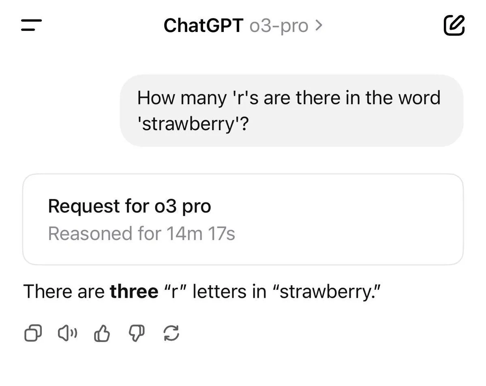

o3-pro can overthink even the simplest prompts
Originally posted on LinkedIn, June 15, 2025.
Users of o3-pro, the new model currently available only to $200 subscribers, are reporting a strange behavior: sometimes it simply thinks too much.
It took 14 minutes to work out how many times the letter "r" appears in "strawberry," and almost 4 minutes to respond to "Hi, I’m Sam Altman." It may be incredibly smart, but someone needs to remind it that not every prompt is an exam.
That makes those of us on the $20 plan feel a little better about our FOMO. It is also a useful reminder to choose the right model for the job.
I use 4o in 90% of cases and 3o for topics that require deeper analysis. Sometimes I mix them within the same conversation, starting with one and continuing with the other.
